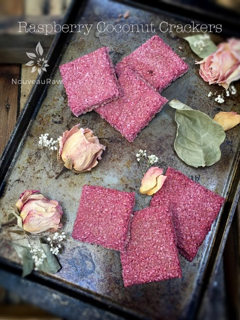
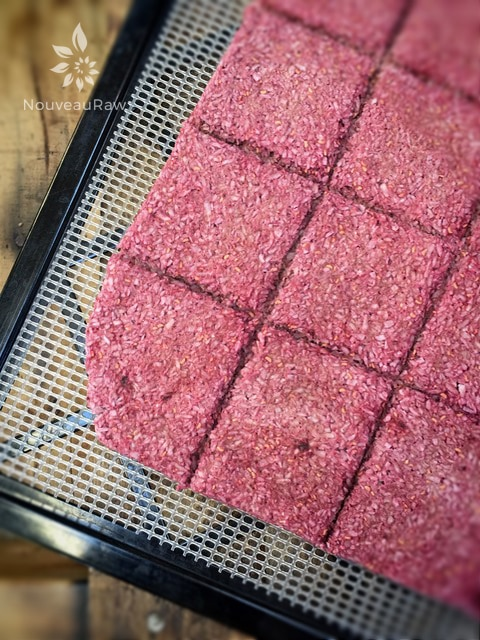
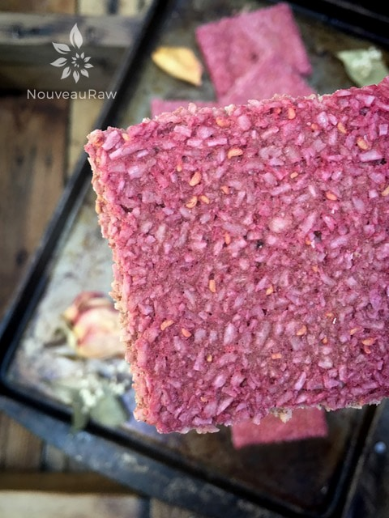
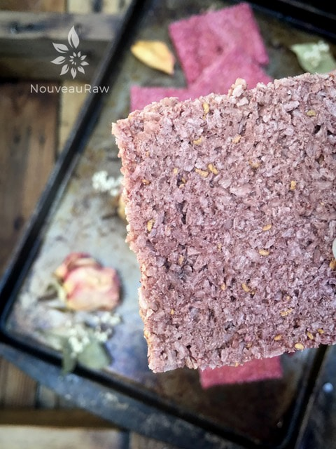

Raspberry Coconut Crackers

~ raw, vegan, gluten-free, nut-free ~
Awaken your taste buds with these sweet, organic, fruity raspberry crackers. Made from fresh raspberries, as well as some that have been freeze-dried at the peak of freshness.
These crackers are light in weight but very very crunchy. I have been creating variations of these nut-free, grain-free, gluten-free, crackers for a while now and they never cease to amaze me.
I modify the ingredients from time to time and noticed that the structure of the cracker will shift. All versions have been crispy and sturdy, but there is a handful, like this particular one that is super crispy. I figured it out… it’s the banana. When I leave the banana out, they are airier, but with the banana, they are denser.
So, if you are not a banana lover, you can omit it and the cracker will still turn out delicious. I also added some ground freeze-dried raspberries to amp up the color, flavor, and nutrients but you don’t have to add it if you can’t find any. They will still turn out to a beautiful pink color.
I am a huge fan of raspberries. This last year whenever I found them on sale, I stocked up. To preserve some for the later months, I stored them in the freezer.
The best way to freeze berries is to place them on a baking sheet (with edges) in a single layer. This will prevent the berries from freezing in large clumps. Freeze them, and once solid, pre-measure out quantities that you think you will use, and seal them in freezer-safe bags.
The other day, I opened my freezer to remove the tray that had frozen and a handful of them crashed to the floor. The raspberries shattered upon hitting the floor. It was beautiful how each little pocket of fruit that creates the whole berry broke apart in little beads. I continue to marvel at the simple things in life. I hope you enjoy this wonderful recipe, oh I should share that it pairs perfectly with my Quick Sweet “Ricotta” Spread. Please be sure to leave a comment below. Many blessings, amie sue
Ingredients:
yields 36 crackers (1- 1 /2″ square)
- 1 1/2 cups (175 g) organic raspberries
- 1 ripe banana
- 1 Tbsp raw agave or maple syrup
- 1 /4 tsp Himalayan pink salt
- 2 cups (211 g) dried, shredded unsweetened coconut
- 1/2 cup (12 g) freeze dried raspberries, powdered
Preparation:
- Process the raspberries, banana, sweetener (if used), and salt in a food processor, fitted with the “S” blade, process until creamy.
- Add shredded coconut, powdered freeze-dried raspberries, and process until well mixed.
- I shared a link above to some freeze-dried raspberries. I just popped them into a spice or coffee grinder and ground them to a powder.
- Line the dehydrator tray with a non-stick teflex sheet.
- Spread the batter into a large square.
- Make sure that you spread it evenly so it dries evenly.
- Score the crackers into desired shapes and sizes. You can use a pizza cutter or a long metal ruler to create the score marks.
- Dehydrate at 145 degrees (F) for 1 hour, then reduce to 115 degrees (F) and continue drying for up to 24 hours… until dry and crispy.
- Snap apart and let cool before storing in an airtight bag/container.
- They should last several weeks in the pantry and can be frozen for 1-2 months. If they start to soften due to humidity, throw them back in the dehydrator to crisp up.
- For Friday night excitement (lol), I placed a teaspoon of softened coconut butter on the crackers. Delicious!
The Institute of Culinary Ingredients™
- To learn more about maple syrup by clicking (here).
- What is Himalayan pink salt and does it really matter? Click (here) to read more about it.
Culinary Explanations:
- Why do I start the dehydrator at 145 degrees (F)? Click (here) to learn the reason behind this.
- When working with fresh ingredients it is important to taste test as you build a recipe. Learn why (here).
- Don’t own a dehydrator? Learn how to use your oven (here). I do however truly believe that it is a worthwhile investment. Click (here) to learn what I use.

Here we are… coming out of the dehydrator. The crackers snap right apart providing you make score lines. Below is a close-up of the front of the cracker. Such a beautiful color.

Below is what the under belly of the cracker looks like. As you can see it much paler in color than the top.

© AmieSue.com